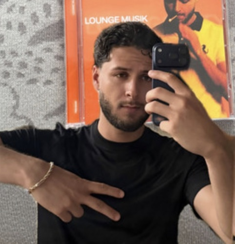
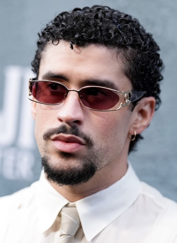

Das Physio-Orakel ist dafür gebaut, dass du dabei weniger Aura verlierst. Gratis, kein Karl-Ess-Move.
Nach Themenkatalogpunkt, nicht nach Vorlesung
Ein Jahr lang hab ich neben dem Lernen an einem System gebastelt, das Fragen im Stil der Physio-Wochentests generiert. Nach Themenkatalogpunkt sortiert, nicht nach Vorlesung.
Trainingsmaterial: ausschließlich das, was sich bei mir eingebrannt hat. Mein Anwalt sagt, Flashbacks sind urheberrechtlich unbedenklich.
Filtration aufs Wesentliche
Schwestern und Brüder der Medizin: Gönnt euch
Als ich 2013 eines Morgens aus unruhigen Träumen erwachte, fand ich mich in meinem Bett zu einem ungeheuren Bitcoin-Millionär verwandelt.
(I wish.)
Die Wahrheit ist unspektakulärer: Ich weiß noch ziemlich genau, wie sich das erste Jahr anfühlt. Ich hab keine Zeit, ein Startup daraus zu machen, und keine Lust, euch dafür Geld abzunehmen. Nehmt's einfach.
Der einzige Circulus vitiosus, den ich hier haben will.
„Selbst wenn die Zeit zum Lernen kurz war, kamen oft Fragen, die nahezu 1:1 wie im Orakel waren, dran.“
„Hab gern damit gelernt. Ist ziemlich idiotensicher. Vor allem hilfreich, um Themen zu verfestigen, aber auch wenn man mal zu knapp angefangen hat mit dem Lernen und sich einen Überblick über die Themen verschaffen will. Kann es sehr empfehlen!“
„Mega Möglichkeit, das eigene Wissen vor dem Test nochmal zu testen und zu festigen.“
„Hab um zwei Uhr nachts im Morrison’s jemandem die Henle-Schleife erklärt. Sie ist gegangen. Aber ich lag richtig.“

„Vallah, Physio-Orakel funktioniert sogar auf babyblauem Nokia 3310“

„Antes del Physio-Orakel: cero aura. Después: aura ilimitada. Mi potencial de membrana nunca estuvo tan estable.“
Auf dass dein Puls nicht im 3. Semester stehen bleibt
124 bpm
Alles-oder-nichts gilt für AP, nicht für Semester.
Ich studiere Humanmedizin an der Semmelweis, mittlerweile im dritten Jahr. Eigentlich sollte ich lernen. Stattdessen suche ich mir Side-Quests, und eine davon siehst du gerade.
Peer Hechenberger
Physio-Orakel
Das Physio-Orakel ist ein privates, nicht-kommerzielles Lernprojekt eines Studenten. Es handelt sich nicht um ein offizielles Angebot der Semmelweis Universität Budapest und steht in keinerlei institutioneller Verbindung zur Universität, deren Instituten oder Lehrpersonal. Inhalte, Darstellungen und Ergebnisse spiegeln nicht die Positionen der Universität wider.
Sämtliche Fragen und Erklärungen werden von einer künstlichen Intelligenz (Claude, Anthropic) generiert und sind nicht von Fachpersonal geprüft. Die Antworten können inhaltliche Fehler, Ungenauigkeiten oder veraltete Informationen enthalten. Das Physio-Orakel ersetzt weder Vorlesungen, Lehrbücher noch sonstige geprüfte Lehrmaterialien und stellt keine akademische Beratung dar.
Die Inhalte wurden unter Verwendung des Vorlesungsstoffs sowie gängiger Lehrbücher in eigenen Worten neu verfasst und nach Themenkatalog gegliedert. Vorlesungsfolien, Skripten und Prüfungsunterlagen der Universität werden weder vervielfältigt noch weitergegeben. Die Fragen basieren auf aus dem Gedächtnis rekonstruierten Inhalten. Sollten Rechteinhaber dennoch eine Verletzung ihrer Rechte sehen, genügt eine formlose Nachricht an [Mail] — beanstandete Inhalte werden umgehend entfernt.
Es wird keine Gewähr für Aktualität, Vollständigkeit, Richtigkeit oder Prüfungsrelevanz übernommen. Änderungen im Curriculum oder in der Prüfungsgestaltung werden nicht automatisch abgebildet.
Die bereitgestellten Inhalte dienen ausschließlich Lernzwecken und stellen keinen medizinischen Rat dar. Informationen aus dem Physio-Orakel dürfen nicht zur Diagnostik, Therapie oder Beratung von Patientinnen und Patienten herangezogen werden.
Die Nutzung erfolgt auf eigene Verantwortung. Ich übernehme keine Haftung für Schäden, die aus der Nutzung oder dem Vertrauen auf die bereitgestellten Inhalte entstehen — einschließlich, aber nicht beschränkt auf, Prüfungsergebnisse oder akademische Konsequenzen.
Nephron.at — Estimated 2025. Privates Lernprojekt, Semmelweis Budapest.